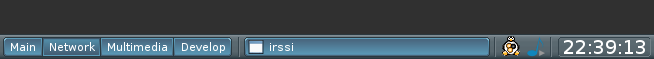
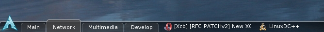

BMPanel 2
BMPanel (BitMap Panel) is a lightweight, NETWM compliant panel for X11 Window System, which contains a desktop switcher, taskbar, system tray and clock. The application is inspired by simplicity of fspanel. BMPanel has a modern look and feel, while keeping itself tiny and small.
It is written in C and has only a few dependencies, such as: imlib2, xlib, fontconfig, xrender and xcomposite extensions. Also, the panel has a few notable features:
-
BMPanel can select ARGB visuals providing, together with composite manager, a true transparency (but system tray doesn’t work in composite mode).
-
BMPanel has no configuration files. Its behaviour is customized via themes.
-
Well, it is themable!
BMPanel doesn’t try to be portable. It should work on a distribution with the latest Linux kernel and with the latest software (probably CVS/SVN/git versions). Supported architectures are x86 (32 bit) and x86_64 (64 bit). However, BMpanel may work on other distributions, kernels (like FreeBSD) and even architectures, but it isn’t guaranteed. Update: It was reported to run on PowerPC.
Latest News
There are only 3 latest news in this section, all news history is here
Couple of weeks ago I had created a development blog. My english sucks, but I’m practicing. Anyway, currently there are only few bmpanel2 entries in that blog. If you’re interested in the bmpanel2 project, welcome!
I suck at making videos. But anyway: http://www.youtube.com/watch?v=1bq_WLxeahY.
This is my first youtube video ever uploaded :) So.. The demo shows 3 simple features of upcoming bmpanel2: drag’n'drop tasks on taskbar, drag’n'drop tasks from taskbar to desktop switcher (move tasks between desktops), and drag’n'drop tasks out off the panel to kill them (close app). My english sucks too, just see the video :)
Misterious screenshot is here.
{kind=link}
What this is all about? Well, it’s a WIP (work in progress) bmpanel2 build. And as you can see, there is a plenty of things implemented. Desktop switcher, taskbar and clock are fully functional. There is actually one more type of a widget called "decor", but it’s not shown on the screenshot. Decor widget allows you to put any image on the panel. But it’s not the only thing hidden.
Here is a little summary.
Bmpanel2 is being built on top of four solid libraries. Cairo for rendering, pango as a text layout engine, xlib as a X11 communication utility and glib2 as a main loop implementation. It is still carefully written in pure C. Bmpanel2 has a new theme format and a completely redesigned internal structure, which allows you to create new types of widgets really fast. And there are also few notable things like drag’n'drop support, XDG conformance and settings file.
Even though it works already, there is a lot of things to be done. A proper systray implementation, correct composite and shaping support, documentation (which includes a man page, a theme tutorial and technical notes for programmers), web page, new pack of professionally designed themes, multihead support, etc.
And after all, it needs to be tested. So.. keep this address in your favourites and come back often, someday it will be released.
P.S. Sources are available on my public git repo which is located on my machine (browse sources here). However, they are not usable for mere mortals yet, go there only if you have programming interest.
Downloads
The latest version: bmpanel-0.9.27.tar.gz (30kb)
You can also try to download older versions by changing raw url. But I can’t give any promises that they will stay here forever.
ArchLinux (AUR): http://aur.archlinux.org/packages.php?ID=15165
Development
All open source projects are always in development. BMPanel is not an exception. It needs various contributions like:
- Ports
-
BMPanel currently works only on x86 and x86_64 machines.
- Themes
-
If you are an artist or have such skills and you like bmpanel, you can make a theme, which will be included in source distribution. Even if you can’t deal with actual theme creation, just draw a look of theme and I or someone else will help you create actual theme.
- Distribution
-
Wider distribution means more chances to get what I need (and possibly others too). Make a package for your Linux distribution or suggest your friend to try bmpanel.
- Bug reports
-
There are bugs in software. Always. If something works wrong or doesn’t work at all, don’t delete bmpanel, first of all, let me know.
Please! Put bug reports here
- Theme tutorial
-
I have only an old version here, but it sucks.
Git repository
One way to get bmpanel’s source code is to download a source distribution. But there is an another way. I have my public git repository online (not 24/7) and you can access it here:
There is also a more reliable mirror on github.com:
Or you can use the following git commands:
git clone git://jiss.convex.ru/bmpanel.git git clone git://github.com/nsf/bmpanel.git
Themes
(All themes < 10kb)
arch theme: arch.tar.gz
darkpink18 theme: darkpink18.tar.gz
Blacky theme: Blacky.tar.gz
clearlooks theme: clearlooks.tar.gz
transpy theme: transpy.tar.gz
darkblack18 theme: darkblack18.tar.gz
simplegray theme: simplegray.tar.gz
tint theme: tint.tar.gz
tint-pack themes (updated tint with multiple colors): tint-pack.tar.gz
inverted clearlooks theme: clearlooks_iv.tar.gz
glass water theme: glasswater.tar.gz
carbon theme: carbon.tar.gz
Contacts
You can send an email to me: no.smile.face@gmail.com, my nickname is nsf.
Or find me on IRC @ Freenode [nick: nsf] (channels: #archlinux, #archlinux-ru).